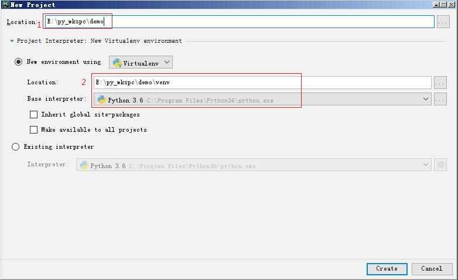
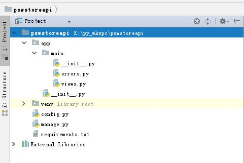
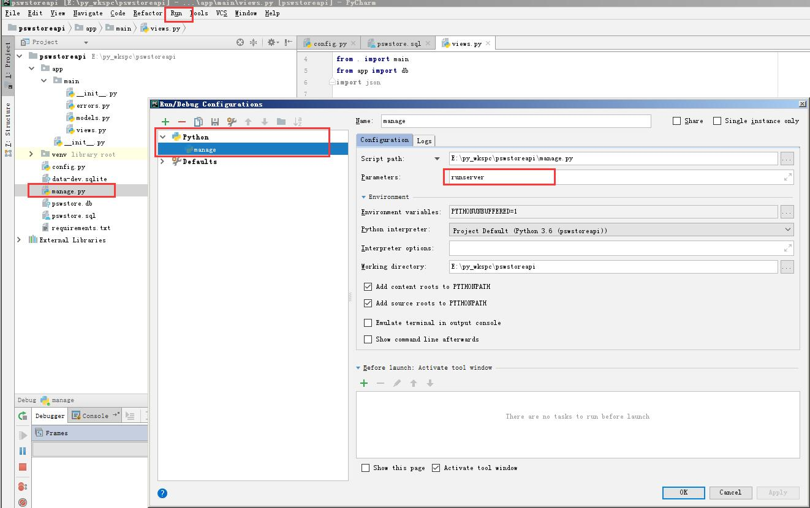

Pycharm 创建Flask项目
创建项目

如图, 1处填写项目名, 2处填写venv环境
确认虚拟环境
在Terminal中，先检查是否为（venv）的虚拟环境标识
创建依赖更新文件
再虚拟环境的命令行下输入pip freeze > requirements.txt，请确保每次更新包依赖后重新更新此文件，即重新执行本命令。
安装Flask
在Terminal 下输入
ps: 在每次更新包依赖时记得更新依赖文件
项目目录结构

Flask 项目有4个顶级文件夹：
- app ——(本例中是 jbox）Flask 程序保存在此文件夹中
- migrations ——包含数据库迁移脚本（安装了 flask-migrate 后自动生成）
- tests ——单元测试放在此文件夹下
- venv ——Python 虚拟环境
同时还有一些文件：
- requirements.txt —— 列出了所有的依赖包，以便于在其他电脑中重新生成相同的环境
- config.py 存储配置
- manage.py 启动程序或者其他任务
- gun.conf Gunicorn 配置文件
创建文件
|
|
config 顾名思义，保存了一些配置变量。SQLALCHEMY_DATABASE_URI 变量在不同的配置中被赋予了不同的值，这样就可以在不同的环境中切换数据库。如果是远程数据库则从环境变量中读取 URL，否则在本地路径中创建。
接下来创建一个 app 文件夹，并在此文件夹中创建一个 __init__.py 文件（init 前后都有两个下划线）：
create_app() 就是程序的工厂函数，参数就是配置类的名字，即 config.py，其中保存的配置可以使用 from_object() 方法导入。
接下来要解释两个重要的概念——路由和视图函数。客户端把请求发给 Web 服务器，Web 服务器再把请求发给 Flask 程序实例，Flask 程序实例需要知道每个 URL 请求要运行哪些代码，所以保存了一个 URL 到 Python 函数的映射关系。处理 URL 和函数之间关系的程序称为路由，这个函数称为视图函数。
|
|
这里使用 app.route 修饰器来定义路由，app 指 Flask 程序实例对象，后面可以看到使用蓝本管理路由后，由蓝本实例对象来取代 app。Flask 使用蓝本来定义路由，在蓝本中定义的路由处于休眠状态，直到蓝本注册到程序上后，路由真正成为程序的一部分。蓝本通常使用结构化的方式保存在包的多个模块中。接下来在 app 文件夹下创建一个子文件夹 main，并在 main 中创建 init.py（如果使用 PyCharm，这里有个快捷方式，右键点击 app 文件夹，在菜单中选择 new -> Python Package，在弹出的对话框中填写包名然后确认即可）：
|
|
现在接着来定义 errors.py:
|
|
最后创建启动脚本 manage.py：
|
|
运行
现在就来启动我们的程序，在命令行中进入 TestProject 目录，然后执行如下命令即可运行：
调试

ref:
https://www.jianshu.com/p/cc90a14856c5
https://www.jianshu.com/p/9352b191f059